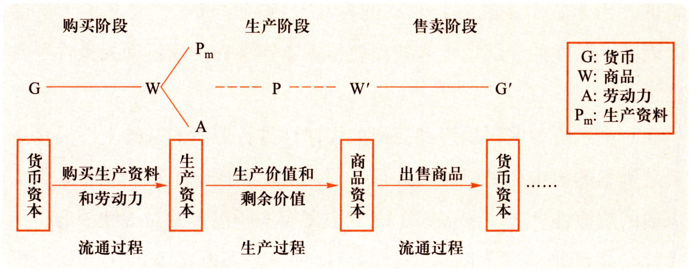

导论部分
什么是马克思主义？什么是马克思主义基本原理？
马克思主义是由马克思恩格斯创立并为后继者所不断发展的科学理论体系，是关于自然、社会和人类思维发展一般规律的学说，是关于社会主义必然代替资本主义、最终实现共产主义的学说，是关于无产阶级解放、全人类解放和每个人自由而全面发展的学说，是无产阶级政党和社会主义国家的指导思想，是指引人民创造美好生活的行动指南。
马克思主义基本原理是对马克思主义立场观点方法的集中概括，是马克思主义在其形成、发展和运用过程中经过实践反复检验而确立起来的具有普遍真理性的理论。它体现马克思主义的根本性质和整体特征，体现马克思主义科学性和革命性的统一。相对于特定历史条件下所作的个别理论判断和具体结论，马克思主义基本原理具有普遍的、根本的和长远的指导意义。
马克思主义的创立和发展（重点关注标志性的著作在马克思主义的创立和发展中的作用）
- 1844年2月，马克思、恩格斯发表在《德法年鉴》上的论文表明，他们完成了从唯心主义向唯物主义、从革命民主主义向共产主义的转变，为创立马克思主义奠定了思想前提。
- 马克思、恩格斯先是在巴黎合写了《神圣家族》一书，接着又在布鲁塞尔合写了《德意志意识形态》。后者首次系统阐述了历史唯物主义的基本观点，实现了历史观上的伟大变革。
- 马克思、恩格斯接受国际性工人组织“正义者同盟”的邀请，将其改组为“共产主义者同盟”，并为其起草了世界上第一个无产阶级政党的党纲——《共产党宣言》。1848年2月，《共产党宣言》发表，标志着马克思主义的公开问世。
- 为了阐明无产阶级在资产阶级革命中的策略，指导工人的斗争，马克思恩格斯回到德国科隆，创办了《新莱茵报》。
- 马克思进行了全面深入的政治经济学研究，撰写了《资本论》并出版了第一卷，系统阐述了剩余价值学说，揭示了资本主义生产关系的秘密。唯物史观和剩余价值学说是马克思一生的两个伟大发现。
- 1871年3 月，巴黎工人起义并成立巴黎公社，马克思代表第一国际写出了著名的《法兰西内战》，高度赞扬了巴黎工人的伟大创举，科学总结了巴黎公社的历史经验。该书以及几年后他写的《哥达纲领批判》，进一步丰富了科学社会主义学说1876一1878年，恩格斯写出了《反杜林论》，全面阐述了马克思主义理论体系。
- 恩格斯指导国际工人运动的重任，并整理出版了《资本论》第二、三卷，写出了《家庭、私有制和国家的起源》《路德维希·费尔巴哈和德国古典哲学的终结》等著作，进一步发展了马克思主义理论。
马克思主义的鲜明特征（熟练掌握马克思主义的4个特征）
- 科学性：马克思主义是科学的理论，创造性地揭示了人类社会发展规律。
- 人民性：马克思主义是人民的理论，第一次创立了人民实现自身解放的思想体系。
- 实践性：马克思主义是实践的理论，指引着人民改造世界的行动。
- 发展性：马克思主义是不断发展的开放的理论，始终站在时代前沿。
第1章 世界的物质性及发展规律
第1节 世界多样性与物质统一性
物质及其存在方式（掌握马克思主义的物质概念及其现实意义）P28
马克思主义的“物质”范畴是一个高度抽象的哲学概念，是对世界上客观存在的各种事物共同本质的概括。这一定义表明，物质是不依赖于人类的意识而存在，并能为人类的意识所反映的客观实在。这种客观实在性，是从自然存在和社会存在中抽象出的共同特性。
马克思主义的物质范畴具有丰富而深刻的理论意义。
第一，坚持了唯物主义一元论，同唯心主义一元论和二元论划清了界限。
第二，坚持了能动的反映论和可知论，批判了不可知论。
第三，体现了唯物论和辩证法的统一，克服了形而上学唯物主义的缺陷。
第四，体现了唯物主义自然观与历史观的统一，为彻底的唯物主义奠定了理论基础。
物质与意识的辩证关系（掌握物质在意识发展中的决定性作用、意识对物质的反作用）P33
- 物质决定意识。意识是客观世界的主观映像。
- 意识对物资具有反作用，这种反作用就是意识的能动作用。
- 第一，意识具有目的性和计划性。
- 第二，意识具有创造性。
- 第三，意识具有指导实践改造客观世界的作用。
- 第四，意识具有调控人的行为和生理活动的作用。
- *主观能动性和客观规律性的辩证统一
- *意识与人工智能
世界的物质统一性原理
世界的统一性在于它的物质性，世界统一于物质。
第一，自然界是物质的。
第二，人类社会本质上是生产实践基础上形成的物质体系。
第三，人的意识统一于物质。
世界的物质统一性是多样性的统一。
世界的物质统一性原理是辩证唯物主义最基本、最核心的观点。
第2节 事物的普遍联系和变化发展
（重点掌握三大规律的基本内容及其方法的意义，并且能够灵活运用三大规律来解决现实生活中的社会实践问题）
联系的特征 P41
客观性、普遍性、多样性、条件性
对立统一规律是事物发展的根本规律 P43
对立统一规律是唯物辩证法的实质和核心。
对立统一规律提供了人们认识世界和改造世界的根本方法——矛盾分析法。
量变质变规律 P47
事物的量和质是统一的，量和质的统一在度中得到体现。
第一，量变是质变的必要，准备。
第二，质变是量变的必然结果，并为新的量变开辟道路。
第三，量变和质变是相互渗透的。
量变质变规律体现了事物发展的渐进性和飞跃性的统一。
否定之否定规律
否定之否定规律就是要揭示事物自己发展自己的完整过程及本质。
深刻内涵×4 P49
他要求我们对待一切事物都要采取科学分析的态度，既要把握它的现存状态，又要把握它的发展趋向，反对简单的肯定一切或否定一切。
eg.中华优秀传统文化
否定之否定规律，揭示了事物发展的前进性与曲折性的统一。
第3节 唯物辩证法是认识世界和改造世界的根本方法
唯物辩证法的本质特征和认识功能（ 重点掌握唯物辩证法的本质、客观辩证法与主观辩证法的统一）
马克思深刻揭示了唯物辩证法的本质，指出“辩证法在对现存事物的肯定的理解中同时包含对现存事物的否定的理解，即对现存事物的必然灭亡的理解；辩证法对每一种既成的形式都是从不断的运动中，因而也是从它的暂时性方面去理解;辩证法不崇拜任何东西，按其本质来说，它是批判的和革命的”。
唯物辩证法是客观辩证法与主观辩证法的统一。
第2章 实践与认识及其发展规律
第1节 实践与认识
科学的实践观及其意义（重点梳理马克思主义的科学实践观的形成、内容和意义）
形成：略
内容：科学实践观从主观和客观、主体和客体的统一中把握实践，据示了实践的本质，指明了实践是人类能动地改造世界的社会性的物质活动，科学阐明了人类实践活动的特点、结构、形式和实践标准等问题，深刻揭示出实践与认识的发展规律，形成了完整科学的理论体系。
意义：
- 克服了旧唯物主义的根本缺陷，为辩证唯物主义的创立奠定T科学的理论基础。
- 揭示了实践对认识的决定作用，为能动的、革命的反映论的创立奠定了科学的理论基础。
- 在人类思想史上第1次揭示了社会生活的实践本质，为唯物史观的创立奠定了科学的理论基础。
- 为人们能动地认识世界和改造世界提供了基本的思想方法和工作方法。
实践的本质与基本结构（理解实践的本质）
本质：实践是人类能动的改造，世界的社会性的物质活动。
特征：客观实在性，自觉能动性、社会历史性。
基本结构：实践主体，实践客体、实践中介
实践对认识的决定作用
- 实践是认识的来源。
- 实践是认识发展的动力。
- 实践是认识的目的。
- 实践是检验认识真理性的唯一标准。
认识的本质与过程（重点掌握认识的本质）
认识的本质是主体在实践基础上对客体的能动反映。
从实践到认识
- 人们认识一定事物的过程，是一个从实践到认识，再从认识到实践的过程。
- 是认识运动的第一次飞跃。
- 是整个认识过程的第一个阶段，只有客观物质到主观精神的阶段，由存在到思想的阶段。
从认识到实践
- 是认识的第二次能动飞跃。
- 必要性和重要性：
- 认识世界的目的是改造世界。
- 认识的真理性只有在实践中才能得到检验和发展。
实践与认识的辩证运动及其规律（重点掌握实践与认识的辩证运动）
实践与认识的辩证运动，是一个由感性认识到理性认识，又由理性认识到实践的飞跃，是实践、认识、再实践、再认识，循环往复以至无穷的辩证发展过程。从实践到认识，再从认识到实践，实现了人们认识具体事物的辩证运动过程。经历了两次飞跃，实践与认识的运动就算完成了吗？回答是：既完成了，又没有完成。
第2节 真理与价值
真理的客观性、绝对性和相对性（重点把握真理的客观性，绝对性和相对性的具体内涵）
客观性
- 真理的客观性指真理的内容是对客观事物及其规律的正确反应，真理中包含着不依赖于人和人的意识的客观内容。
- 真理是客观的，凡真理都是客观真理，这是真理问题上的唯物论。
- 真理的客观性决定了真理的一元性。
绝对性和相对性
任何真理都是绝对性和相对性的统一，二者相互联系、不可分割。
真理的检验标准（理解实践作为检验真理的唯一标准、实践标准的不确定性）
实践作为检验真理的唯一标准 P100
实践标准的不确定性
实践标准的不确定性及相对性，是指实践作为检验真理标准的条件性。
真理与价值的辩证统一（重点把握价值的基本特征、价值评价的特点以及真理与价值在实践中的辩证统一）
- 价值的基本特征：主体性，客观性，多维性，社会历史性
- 价值评价的特点：
- 评价以主客体之间的价值关系为认识对象。
- 评价结果与评价主体直接相关。
- 评价结果的正确与否依赖于对客体状况和主体需要的认识。
- 价值评价有科学与非科学之别。
第3章 人类社会及其发展规律
第1节 人类社会的存在与发展
社会存在与社会意识
社会存在与社会意识的关系问题，是社会历史观的基本问题。
两种根本对立的历史观
唯物史观，唯心史观
社会存在（重点把握社会存在的内涵及其决定性因素）
社会存在是指社会物质生活条件，是社会生活的物质方面，主要包括自然地理环境，人口因素和物质生产方式。
物质生产方式是社会存在和发展的基础及决定力量。
社会意识
社会意识是社会存在的，是社会生活的精神方面。
根据不同的主体社会意识，可分为个体意识和群体意识。
根据不同的层次社会意识可分为社会心理和社会意识形式。
社会存在和社会意识的辩证关系（重点把握社会意识的相对独立性）
社会存在和社会意识是辩证统一的，社会存在决定社会意识，社会意识是社会存在的反映，并反作用于社会存在。
社会意识的独立性是指，社会意识在从根本上受到社会存在决定的同时，还具有自身特有的发展形式和发展规律。
社会存在和社会意识辩证关系原理的重要意义
社会存在和社会意识辩证关系原理，对于我们树立科学历史观，正确认识社会历史具有重要意义。
第2节 社会历史发展的动力
- 社会基本矛盾：生产力与生产关系，经济基础与上层建筑之间的矛盾。
- 阶级斗争、社会革命
- 阶级斗争是社会基本矛盾在阶级社会中的表现，社会革命是社会基本矛盾所引起的广泛而深刻的社会变革的统称，既包括推翻旧制度，旧社会建立新制度，新社会的革命，也包括那种虽然不变更根本制度，但对体制机制进行深刻改造并对社会进步有深远影响的改革。
- 阶级斗争是阶级社会发展的直接动力。
- 革命是社会进步和政治进步的强大推动力，是实现社会形态更替的重要手段和决定性环节。
- 必须坚定不移的坚持中国共产党的基本理论基本路线，基本方略，正确认识和处理阶级斗争问题。
- 改革是一定社会为了解决社会基本矛盾，而对生产关系和上层建筑进行的深刻的改变和革新，它是社会制度的自我调整和完善，是同一种社会形态发展过程中的量变和部分质变，是推动社会发展的又一重要动力。
- 改革科学技术在社会历史发展过程中的具体作用。
- 科技革命是推动经济和社会发展的强大杠杆。
- 每一次科技革命，都不同程度的引起了生产方式、生活方式和思维方式的深刻变化和社会的巨大进步。
第4章 资本主义的本质及规律
第1节 商品经济和价值规律
- 商品经济的形成和发展（重点掌握商品的定义、商品经济形成的条件、商品二因素与劳动的二重性）
- 商品是用来交换能满足人的某种需要的劳动产品，具有使用价值（是商品的自然属性，是一切劳动产品所共有的属性，离开了它商品就不复存在）和价值（是商品所特有的社会属性，是凝结在商品中的无差别的一般人类劳动）两个因素或两种属性是使用价值和价值的矛盾统一体。
- 商品经济形成的条件：一是存在社会分工，二是生产资料和劳动产品属于不同的所有者。
- 劳动的二重性：具体劳动、抽象劳动。生产商品的具体劳动创造商品的使用价值，抽象劳动形成商品的价值。
- 价值规律及其作用（重点理解价值规律的科学内涵）
- 价值规律是商品生产和商品交换的基本规律。
- 商品的价值量由生产商品的社会必要劳动时间决定。
- 表现形式：商品的价格围绕商品的价值自发波动。
- 以私有制为基础的商品经济的基本矛盾（重点掌握以私有制为基础的商品经济的基本矛盾同资本主义基本矛盾的关系）
- 私有制商品经济条件下，私人劳动和社会劳动之间的矛盾是商品经济的基本矛盾。在资本主义制度下，这种矛盾进一步发展成资本主义的基本矛盾，即生产社会化和生产资料资本主义私人占有之间的矛盾。
- *科学认识马克思劳动价值论。
第2节 资本主义经济制度的本质
资本主义经济制度的产生（重点理解资本主义经济制度产生的条件）(By GPT)
- 资本的形成和原始积累
- 私有财产的存在
- 劳动力市场的形成
- 自由市场的形成
劳动力成为商品和货币转化为资本（理解劳动力商品的价值和使用价值、劳动力商品形成的基本条件、货币转化为资本的条件）
- 劳动力的价值：
- 维持劳动者本人生存所必须的生活资料的价值
- 维持劳动者家属的生存所必需的生活价值的价值
- 劳动者接受教育和训练所支出的费用
- 劳动力商品在使用价值上有一个很突出的特点，就是它的使用价值是价值的源泉，在消费过程中能够创造新的价值，而且这个新的价值比劳动力本身的价值更大。
- 剩余价值用m表示。
- 劳动力商品形成的基本条件：
- 劳动者在法律上是自由人能够把自己的劳动力作为自己的商品来支配。
- 劳动者没有任何生产资料，没有生活资料来源，因而不得不依靠出卖劳动力为生。
- 一旦货币购买的劳动力带来剩余价值，货币也就变成了资本。
- 劳动力的价值：
资本主义所有制
生产剩余价值是资本主义生产方式的绝对规律（重点掌握绝对剩余价值和相对剩余价值的生产方式，资本有机构成、资本循环与周转、剩余价值率）
资本主义商品的价值构成公式：\(W=c+v+m\)
\(c\)：以生产资料形式存在的资本，在生产过程中只转移自己的价值量，不发生增值，这部分资本叫做不变资本。
\(v\)：在生产过程中，工人所创造的新价值不仅包括相当于劳动力价值的价值，而且还包括一定量的剩余价值，由于这部分资本的价值是一个可变的量，因此叫做可变资本。
剩余价值是由可变资本雇佣的劳动者创造的，雇佣劳动者的剩余劳动是剩余价值的唯一源泉。这种划分也为确定资本家对雇佣劳动者的剥削程度提供了科学依据。
剩余价值率\(m'=m/v=剩余劳动/必要劳动=剩余劳动时间/必要劳动时间\)
绝对剩余价值和相对剩余价值的生产方式
- 绝对剩余价值是指在必要劳动时间不变的条件下，由于延长工作日的长度或提高劳动强度而生产的剩余价值。
- 相对剩余价值是指在工作日长度不变的条件下，通过缩短必要劳动时间而相对延长剩余劳动时间所生产的剩余价值。
- 超额剩余价值是个别资本家首先提高本企业的劳动生产率，使其商品的个别价值低于其社会价值的差额（资本家追逐）。
资本的技术构成决定资本的价值构成，技术构成的变化往往会引起价值构成的相应变化，而价值构成的变化通常反映技术构成的变化，这种由资本的技术构成决定并反映技术构成变化的资本价值构成，叫做资本的有机构成。
资本循环与周转
 - 第一个阶段是购买阶段，即生产资料和劳动力的购买阶段。它属于商品的流通过程。在这一阶段，产业资本执行的是货币资本的职能。
- 第二个阶段是生产阶段，即生产资料与劳动力按比例结合在一起从事资本主义生产的阶段。在这个阶段上，生产资料与劳动者相结合生产物质财富并使生产资本得以增殖，产业资本执行的是生产资本的职能。
- 第三个阶段是售卖阶段，即商品资本向货币资本的转化阶段。在此阶段，产业资本执行的是商品资本的职能，通过商品售卖不仅要实现商品的价值，还要实现剩余价值。
资本主义的基本矛盾与经济危机
- 生产社会化和生产资料资本主义私人占有之间的矛盾，是资本主义的基本矛盾。
- 生产过剩是资本主义经济危机的本质特征。
第5章 资本主义的发展及其趋势
第1节 垄断资本主义的形成和发展
资本主义从自由竞争到垄断的发展
19 世纪 70 年代以前，资本主义处于自由竞争阶段；从 19 世纪 70 年代开始，自由竞争资本主义逐步向垄断资本主义发展；19 世纪末 20 世纪初 ， 垄断代替自由竞争并占据统治地位 ， 垄断资本主义得以形成这一时期 ， 垄断资本主义主要以私人垄断资本为基础 ， 所以又叫私人垄断资本主义私人垄断资本主义是在生产集中和资本集中的基础上形成的。
垄断资本主义的发展（重点掌握资本扩张）P247
经济全球化的表现：生产全球化、贸易全球化、金融全球化。
第2节 正确认识当代资本主义的新变化
- 第2次世界大战后资本主义的变化
- 生产资料所有制的变化
- 劳资关系和分配关系的变化
- 社会阶层和阶级结构的变化
- 经济调节机制和经济危机形态的变化
- 政治制度的变化
- 原因：
- 科学技术革命和生产力的发展是资本主义发生变化的根本推动力量
- 工人阶级争取自身权利和利益的斗争是推动资本主义发生变化的重要力量
- 工人阶级争取自身权利和利益的斗争是推动资本主义发生变化的重要力量
- 社会主义制度初步显示的优越性对资本主义产生了重要影响
- 主张改良主义的政党对资本主义制度的改革，也对资本主义发生变化起到了重要作用
第3节 资本主义的历史地位和发展趋势
- 资本主义的历史进步性
- 资本主义将科学技术转变为强大的生产力。
- 资本追求剩余价值的内在动力和竞争的外在压力推动了社会生 产力的迅速发展。
- 资本主义的意识形态和政治制度作为上层建筑在战胜封建社会 自给自足的小生产的生产方式，保护、促进和完善资本主义生产方式方面 起着重要作用，从而推动了社会生产力的迅速发展，促进了社会进步。
- 资本主义的历史局限性
- 资本主义的基本矛盾阻碍社会生产力的发展。
- 第二，资本主义制度下财富占有两极分化，引发经济危机。
- 资本主义为社会主义所代替的历史必然性（重点理解资本主义为社会主义所代替的“历史必然性”）
- 第一，资本主义基本矛盾 “ 包含着现代的一切冲突的萌芽 "。
- 第二，资本积累推动资本主义基本矛盾不断激化并最终否定资本主义自身。
- 第三，国家垄断资本主义是资本社会化的更高形式 ， 将成为社会主义的前奏。
- 第四，资本主义社会存在着资产阶级和无产阶级两大阶级之间的矛盾和斗争。


发表您的看法